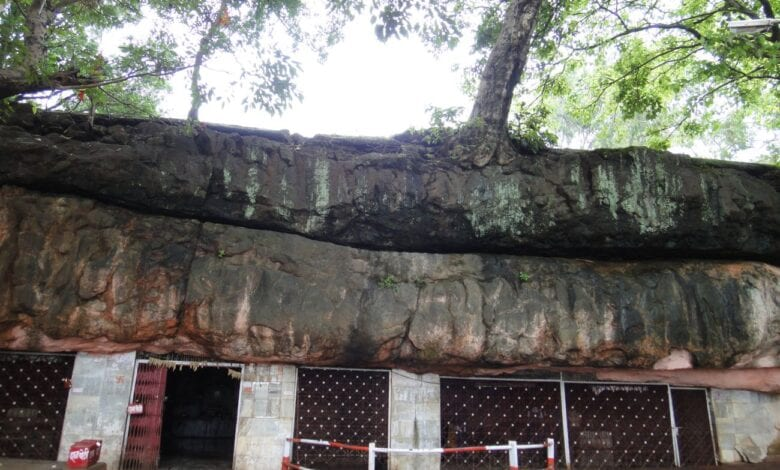
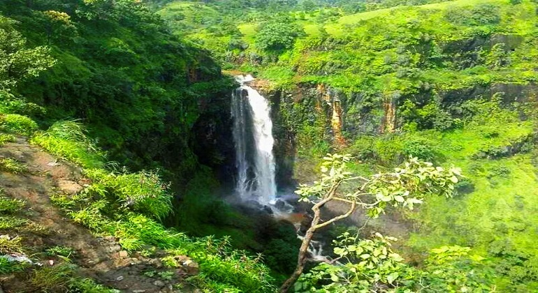
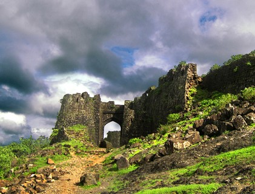

DEVIPOINT
It is one of the best places to visit near Chikhaldara which contains a temple of the native goddess
built inside a huge rock.

BHIMKUND
According to Hindu Mythology the place where Bhima washed his hands of the blood of Keechaka

GAWILGARH FORT
This historically significant place Gawilgarh Fort was the mountain stronghold of the Maratha Empire
during the British rule in India.